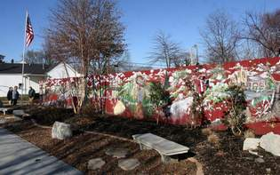
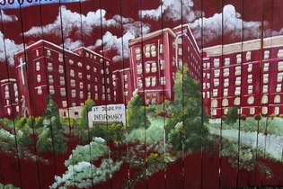

A mural at Atwood Street and Bradley Avenue shows neighborhood
landmarks through the years. Fence owner James Weiter, has put in
benches so people can sit and reminisce. (By Arza Barnett, The
Courier-Journal)

The old St. Joseph Infirmary, on Eastern Parkway west of Preston
Street, gave the neighborhood its name and was its best-known
institution. It closed in 1980. (Photos by Arza Barnett, The
Courier-Journal)
During the past two years, James Weiter has gotten
used to people stopping by the fence around his property in St.
Joseph. People stop, look, point and talk.
"Three or four times a week I see people do that," Weiter said.
"It's mostly middle-aged people. A lot of times they bring their
parents."
The wooden fence, along Atwood Street and Bradley Avenue, gets
attention because it contains a colorful mural depicting about 25
buildings with roots in St. Joseph.
The fence is a neighborhood history lesson that's 6 feet tall and
about 170 feet long.
Some of the buildings have been razed and others still stand. "They
can all take you back," said Gail Linville, president of the St.
Joseph Area Association.
Linville and other association members asked Weiter in 2006 if a
mural could be painted on the fence around his business, Luv-It
Landscaping. "A lot of people don't know anything about the history
of St. Joseph," Linville said.
Weiter agreed. He even installed three benches and a flagpole and
planted shrubs, flowers and a birch tree along the Bradley Avenue
portion of the fence.
"I was glad to do it," said Weiter, who lives on Atwood, next to his
business. "People need to do things like this for the good of the
neighborhood."
The part of the mural that seems to draw the most attention, Weiter
said, shows the old St. Joseph Infirmary. It gave the neighborhood
its name and was its largest and best-known institution.
Operated by the Sisters of Charity of Nazareth, the hospital opened
in 1926 on Eastern Parkway west of Preston Street. It closed in
1980, when many of its services were transferred to what now is
Norton Audubon Hospital.
Other buildings in the mural are less grand. They include churches,
bars, groceries, drugstores, barber shops, a gas station, beer
depot, bakery and the old Capitol movie theater.
Some of the businesses in the mural closed and have been replaced.
For example, the mural includes the old A&P grocery on Miller
Avenue, now a Pic-Pac.
"I remember going to that A&P," said Linville, who grew up in St.
Joseph. "My dad was a policeman. He got paid on the first and the
15th. That's when we went to the grocery."
Similarly, the mural shows Gutgsell's Tavern (now Uncle Pleasant's),
Hafendorfer's Drug Store (now the Christian Book Nook) and Molly's
Beer Depot (now Mr. Gatti's).
An Oertel's 92 sign, advertising the long-gone local beer, stood
next to Molly's, according to the mural.
One of the more dramatic changes involved Jack's Barber Shop. It's
now the Tabernacle of David. The mural also includes the Zanzibar,
also called the Z-Bar. The Brown Bag Deli & Pub is there now.
Other sites depicted in the mural are still operating after a
generation or longer. They include the Full Gospel Mission, Atwood
Wesleyan Church, Swiss Hall, Bill's Barbershop, the White Castle,
Our Mother of Sorrows Catholic Church and the Cottage Inn.
Dwane Beckhart, who created the mural and paid for the paint, noted
that it includes two 1950s automobiles from opposite ends of the
spectrum. One was a gold 1959 Cadillac with big fins. The other is a
Nash Rambler, the economy car of its time.
"I drew them in because they were from the same time period" as much
of the rest of the mural, Beckhart said. He lives in St. Regis Park
in eastern Jefferson County, but his parents grew up in St. Joseph.
Beckhart, who did the work as a volunteer, said it took him about
two weeks to paint the mural. He might paint some more, if Linville
gets her way.
"There's room for more on the mural," she said.
Linville hopes it can include a diner called the Nickel House that
was next to Gutgsell's on Preston Street. "If I remember right, they
served something called a moon burger."
Reporter Bill Pike can be reached at (502) 582-4243.